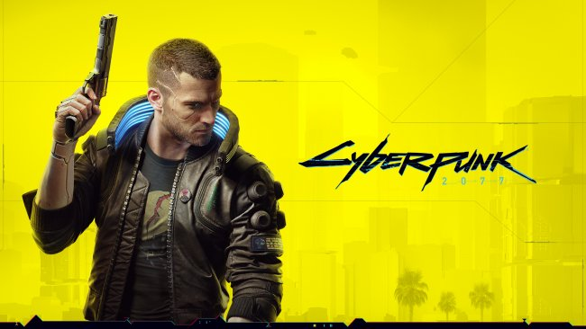
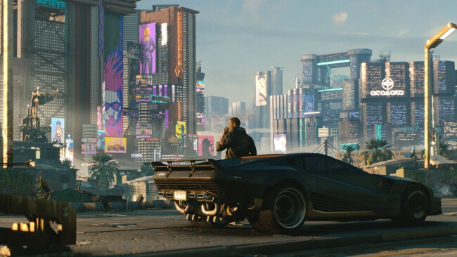

Cyberpunk 2077 Free Download (v1.12)
About The Game
Cyberpunk 2077 is an open-world, action-adventure story set in Night City, a megalopolis obsessed with power, glamour and body modification. You play as V, a mercenary outlaw going after a one-of-a-kind implant that is the key to immortality. You can customize your character’s cyberware, skillset and playstyle, and explore a vast city where the choices you make shape the story and the world around you. Become a cyberpunk, an urban mercenary equipped with cybernetic enhancements and build your legend on the streets of Night City. Enter the massive open world of Night City, a place that sets new standards in terms of visuals, complexity and depth. Take the riskiest job of your life and go after a prototype implant that is the key to immortality.

How to Download & Install Cyberpunk 2077
- Click the Download button below and you should be redirected to UploadHaven.
- Wait 5 seconds and click on the blue ‘download now’ button. Now let the download begin and wait for it to finish.
- Once Cyberpunk 2077 is done downloading, right click the .zip file and click on “Extract to Cyberpunk.v1.12.zip” (To do this you must have 7-Zip, which you can get here).
- Double click inside the Cyberpunk 2077 folder and run the exe application.
- Have fun and play! Make sure to run the game as administrator and if you get any missing dll errors, look for a Redist or _CommonRedist folder and install all the programs in the folder.
Cyberpunk 2077 Free Download
Click the download button below to start Cyberpunk 2077 Free Download with direct link. It is the full version of the game. Don’t forget to run the game as administrator.
Cyberpunk 2077 (v1.12)
Size: 58.14 GB
System Requirements
- Requires a 64-bit processor and operating system
- OS: Windows 7 or 10
- Processor: Intel Core i5-3570K or AMD FX-8310
- Memory: 8 GB RAM
- Graphics: NVIDIA GeForce GTX 780 or AMD Radeon RX 470
- DirectX: Version 12
- Storage: 70 GB available space
- Additional Notes: In this game you will encounter a variety of visual effects that may provide seizures or loss of consciousness in a minority of people. If you or someone you know experiences any of the above symptoms while playing, stop and seek medical attention immediately.
Screenshots

BACK